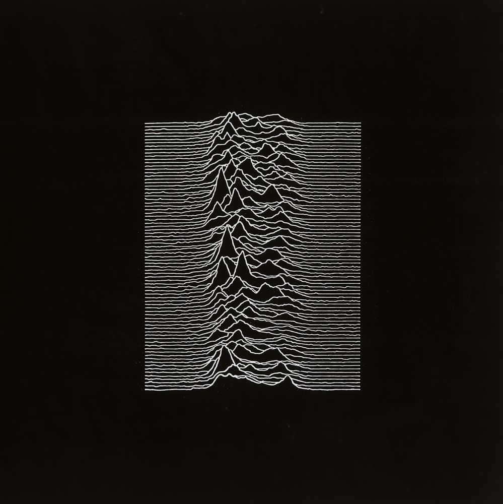
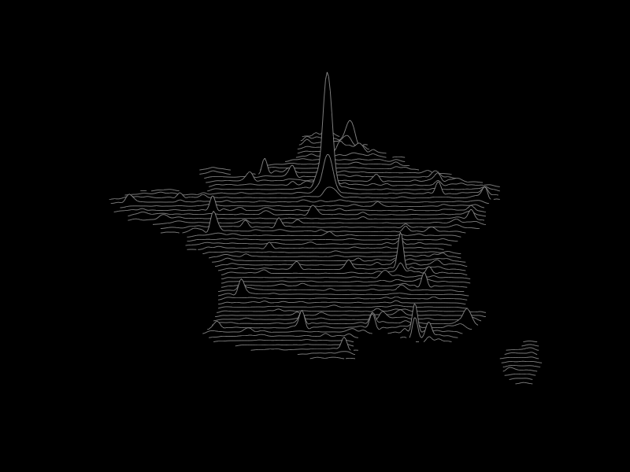
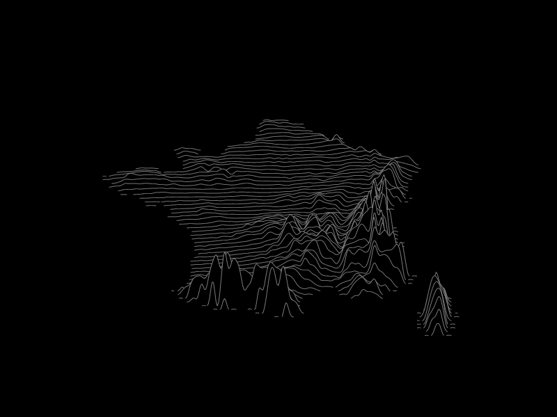

Autant que l’album en lui-même, pierre angulaire de la cold wave, la couverture de Unknown Pleasures est restée dans les mémoires : un article de début 2015 revenait sur la genèse du visuel utilisé sur la pochette de Joy Division. Issue d’une revue d’astronomie, l’image représente les ondes du premier pulsar découvert dans les années 1970.

Le cartographe anglais James Cheshire a édité une carte de la population mondiale en s’inspirant de ce mode de réprésentation et Ryan Brideau a eu la bonne idée de rechercher et de publier le processus permettant de jouer avec ces lignes.
Depuis, Timothée Giraud a proposé une librairie parfaite pour réaliser ce genre de cartes facilement
Voilà le résultat pour la population de France métropolitaine : chaque ligne approxime la population située sur la latitude correspondante :

Sans aucune délimitation des coutours administratifs, on reconnait immédiatement les pôles denses (oui, les villes) et les territoires structurés autour d’eux. Cette visualisation à mi chemin entre le diagramme en ligne et la carte, entre l’isoplèthe et la 3D, n’est peut-être pas la meilleure pour rendre compte précisément des masses de population, mais elle est assez inhabituelle pour nous faire porter un regard neuf sur ces données mille fois vues et revues.
Et pour l’altitude, le résultat est également troublant : on y voit de façon très claire les barrières naturelles des Alpes et des Pyrénées, mais aussi le couloir Rhodanien ou les massifs de moindre envergure (le Perche, les monts d’Arrée…).

En bonus, une animation créée à partir de la localisation des populations aux recensements successifs de 1968, 1975, 1982, 1990, 1999, 2007 et 2012 : la population des villes françaises s’est largement accrue mais ce n’est pas avec cette visualisation qu’on pourra en faire une analyse détaillée. Par contre, avec un peu d’imagination, on y voit battre le pouls du pays.